Whisper
The SOC team received an alert on 21st January 2025 about suspicious activity originating from an employee's system (Alpha).
Alpha was not authorized to engage in any offensive hacking activities within the network.
The Incident Response (IR) team quickly acted, isolating the system so you can perform a thorough triage and investigation to determine the scope of the breach and potential impact on the network.
Task 1
What is the hostname of the company computer involved in the unauthorized activity?
The challenge archive contains a copy of the host's filesystem. It contains a full pack of artifacts useful for the investigation.
To start off the challenge, I will look into the registry hives, the SYSTEM hive in particular. This is where information about the system and the computer is stored.
If I did not remember the exact keypath, I would use the --sa flag to find every key that contains the ComputerName string.
.\RECmd.exe -f C:\Users\malware\Desktop\HTB\Whisper\C\Windows\System32\config\SYSTEM --sa ComputerName
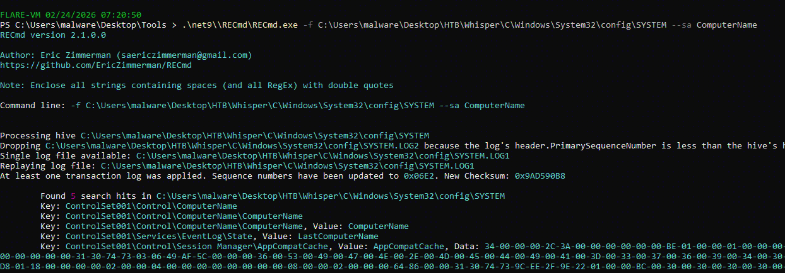
The ControlSet001\Control\ComputerName\ComputerName key is what I'm looking for. I'll repeat the command, this time using the --kn flag to view the values of this key.
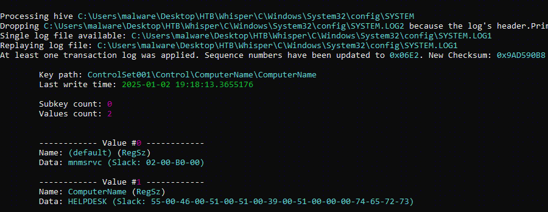
The computer name is HELPDESK
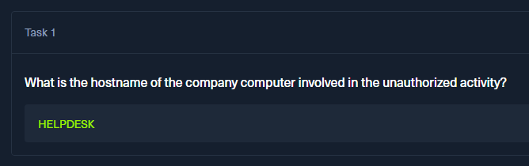
Task 2
What is the IP address associated with the machine?
Still focusing on the SYSTEM hive, I will navigate to the ControlSet001\Services\Tcpip\Parameters\Interfaces key. This is where information about particular network interfaces is held, like the DHCP lease date, currently assigned IP, and a few more things.
RECmd.exe -f C:\Users\malware\Desktop\HTB\Whisper\C\Windows\System32\config\SYSTEM --kn ControlSet001\Services\Tcpip\Parameters\Interfaces
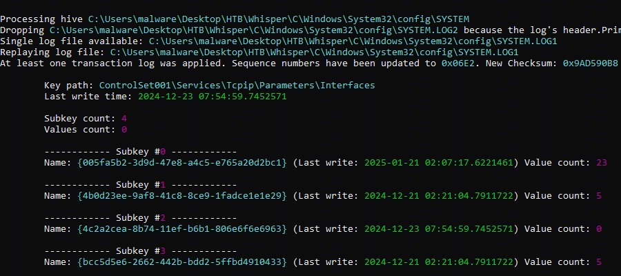
There is a single interface with the last write date matching that of the attack date. I'll look further into that GUID.
RECmd.exe -f C:\Users\malware\Desktop\HTB\Whisper\C\Windows\System32\config\SYSTEM --kn "ControlSet001\Services\Tcpip\Parameters\Interfaces\{005fa5b2-3d9d-47e8-a4c5-e765a20d2bc1}"
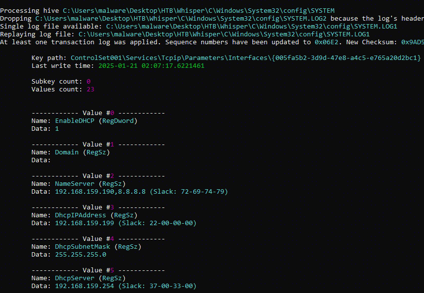
I can see that DHCP is enabled, and that the most recently acquired IP address is 192.168.159.199
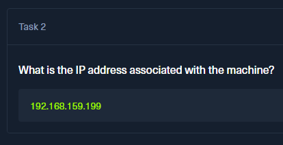
Task 3
What is the Security Identifier (SID) of the computer involved in the incident?
To get the computer's SID (Security Identifier), I will browse the Security Account Manager (SAM) registry hive.
However, looking for the SID/Security Identifier string will not help here. This is because the value is stored in a specific way.
RECmd.exe -f C:\Users\malware\Desktop\HTB\Whisper\C\Windows\System32\config\SAM --kn "SAM\Domains\Account"
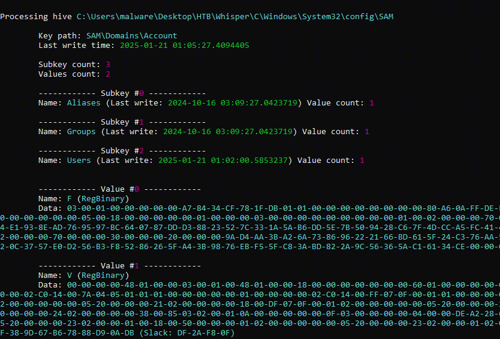
The SID value is stored as a RegBinary value, in a hex-like format. Up till the first SID bytes (starting with the 01-04), the V value follows this pattern:
Bytes 0-3: Offset from the start of the header.
Bytes 4-7: Length of the data.
Bytes 8-11: Unknown/Padding.
The SID itself has a particular structure in the V value:
Byte Range | Hex Value | Description | Translated Value
Byte 0 | 01 | Revision Number | 1
Byte 1 | 04 | Number of Sub-authorities | 4 (Amount of sub-authorities)
Bytes 2-7 | 00-00-00-00-00-05 | Identifier Authority (Who issued the SID?) | 5 (NT Authority)
Bytes 8-11 | 15-00-00-00 | Sub-authority 0 (Little-Endian) | 21 = Local/Domain account SID. If this value were 18, this would be a well-known LocalSystem account.
Bytes 12-15 | 56-64-CF-38 | Sub-authority 1 (Little-Endian) | 953115734
Bytes 16-19 | 9D-67-B6-78 | Sub-authority 2 (Little-Endian) | 2025219997
Bytes 20-23 | 88-D9-0A-DB | Sub-authority 3 (Little-Endian) | 3674921352
For the 3 sub-authorities, I found the Windows calculator to be immensely useful. After manually applying the endianness to the hex value (88-D9-0A-DB > DB-0A-D9-88), I fed this new hex value into the calculator after setting it to hex mode.
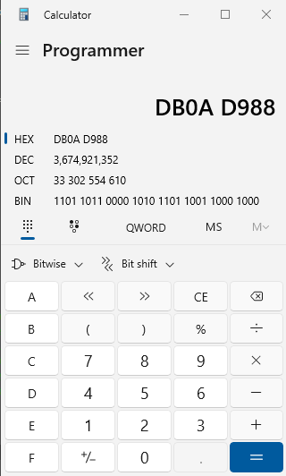
The calculator calculates the value just like the CPU does, with all of its quirks and mechanics. It is much better than trying to decode the value with Cyberchef, which I could not figure out up to this point.
Stitching the SID values together, the computer SID is: S-1-5-21-953115734-2025219997-3674921352. We don't write the 4, as it is just metadata telling the CPU how many sub-authorities there are. If we were to include it in the SID, it would not match up at all.
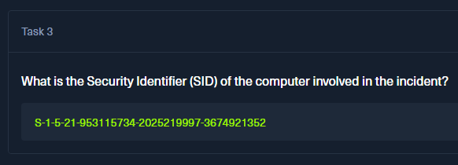
Task 4
What was the timezone setting of the machine?
Once again, this information is stored in the SYSTEM hive. The --sa flag in Registry Explorer CMD can be used for a quick reminder as to what the exact path is.
RECmd.exe -f C:\Users\malware\Desktop\HTB\Whisper\C\Windows\System32\config\SYSTEM --kn "ControlSet001\Control\TimeZoneInformation"
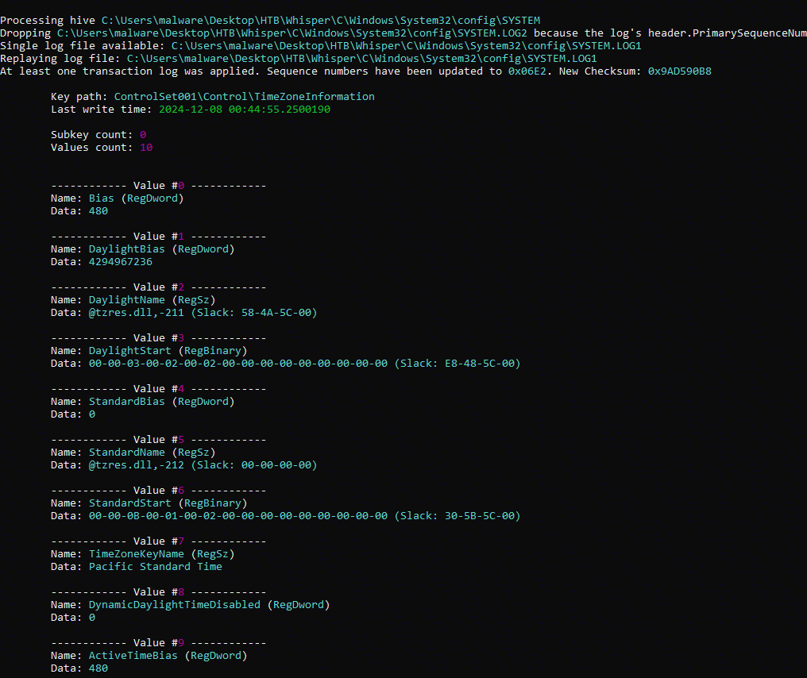
The timezone information is stored under the TimeZoneKeyName value. Aside from that, there are a few more interesting values like the daylight bias, regular bias, and active time bias.
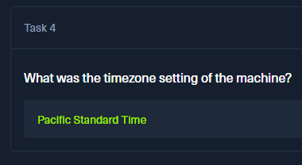
Task 5
Which tool did the attacker use to escalate privileges and extract sensitive credentials from the system?
I'll use the 2 journals ($MFT and $J) to check what kind of files found their way onto the computer during the day of the attack. This is where the time becomes crucial, necessary to narrow down the enormous amount of entries contained within the journals.
MFTECmd.exe -f 'C:\Users\malware\Desktop\HTB\Whisper\C\$Extend\$J' -m 'C:\Users\malware\Desktop\HTB\Whisper\C\$MFT' --csv mftout
Instead of viewing them through Notepad as usual, though, I will use Timeline Explorer. I can load any CSV file generated by the other EZ suite programs, and it'll create a nice table of entries from the passed file.
I will filter for the date of the attack, as well as for some common malicious extensions. A more detailed filter editor can be accessed by right-clicking any of the column names and picking filter editor
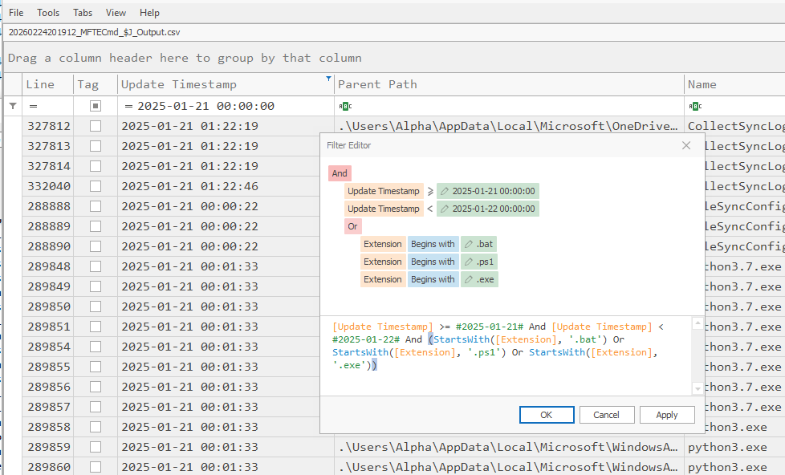
The final filter ended up being: [Update Timestamp] >= #2025-01-21# And [Update Timestamp] < #2025-01-22# And (StartsWith([Extension], '.bat') Or StartsWith([Extension], '.ps1') Or StartsWith([Extension], '.exe'))
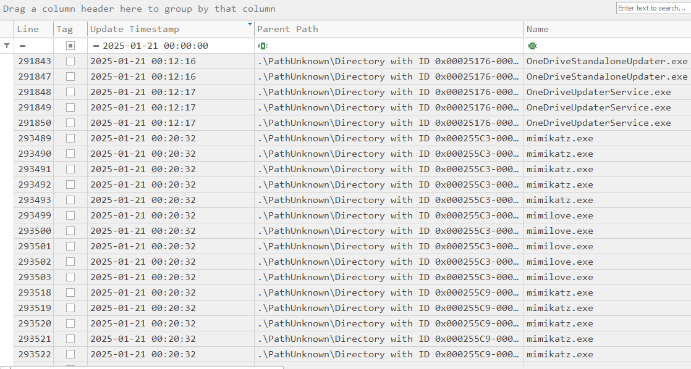
Quickly, I found a malicious tool accessed from a remote location. Mimikatz is a credential dumping tool used to steal credentials from LSASS and inject/steal Kerberos tickets on a machine. One constraint of the tool is that it requires elevated privileges(administrator or SYSTEM) for most of its actions.
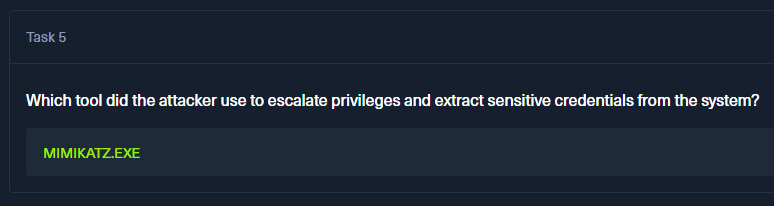
Task 6
What is the timestamp of the last execution of the credential extraction tool on the system used by the attacker?
To get the time of Mimikatz's last execution, I will look into its prefetch file. Windows creates a prefetch .pf file whenever an executable is run for the first time, and then updates it after each execution (storing up to 8 most recent executions on modern systems).
These files are a goldmine for forensics analysis, as not only do they store data about the file's execution, they also store information about which files and directories are referenced by the program.
PECmd.exe -f 'C:\Users\malware\Desktop\HTB\Whisper\C\Windows\prefetch\MIMIKATZ.EXE-7A038744.pf'

The malware has been executed 2 times. First on 2025-01-21 00:21:01, and the most recently, on 2025-01-21 00:21:41. Aside from that, I can see the malware's full path of USERS\ALPHA\DOWNLOADS\MIMIKATZ_TRUNK\X64\MIMIKATZ.EXE. This tells me that the attacker downloaded the mimikatz_trunk.zip archive from the Github, not just the .exe.
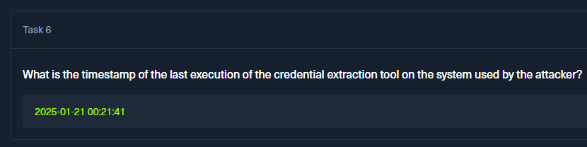
Task 7
What is the timestamp when the attacker first downloaded the credential extraction tool onto the system?
I'll return to the two journals and the Timeline Explorer. Here's when knowledge from the previous task actually saves quite a lot of time.
Because I know that the attacker downloaded the mimikatz_trunk.zip archive from the Github, this is what I should be looking for, and not the .exe. Specifically, I will be looking for its FileCreate event in the $UsnJournal.
Filters for Timeline Explorer:
Update Timestamp: Day of the attack
Name: trunk
Update Reasons: FileCreate
File Attributes: Archive
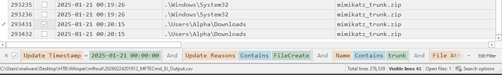
This FileCreate event tied to the archive has been initiated on 2025-01-21 00:20:15
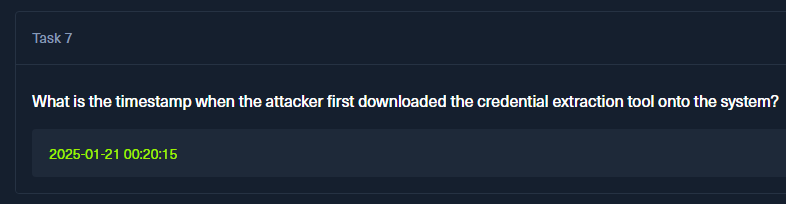
Task 8
After using the previously mentioned tool, the attacker downloaded a script to scan the domain controller. What is the URL from which the attacker downloaded this script?
I'll take a look into the AppData\Local directory to see what kind of browsers exist within Alpha's filesystem.
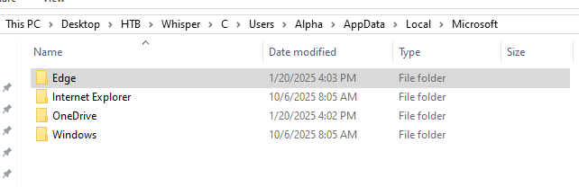
Only Edge and InternetExplorer are present. I'm gonna focus on Edge since IE is rarely used these days, and the way it stores data is more complex. I will use SQLECmd to parse the History database, and grab the downloads history.
SQLECmd.exe -f 'C:\Users\malware\Desktop\HTB\Whisper\C\Users\Alpha\AppData\Local\Microsoft\Edge\User Data\Default\History' --csv edgeout
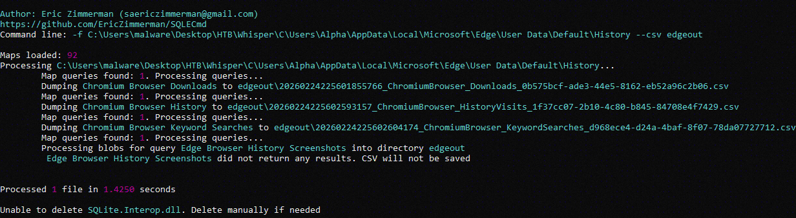
Now I'll open the resulting downloads .csv file in Timeline Explorer. It contains only one record, with these details:
Current Path: Current Path: C:\Users\Alpha\Downloads\DC-Scan.ps1
Start Time: 2025-01-21 00:27:19
End Time: 2025-01-21 00:28:07
Danger Type: Dangerous But User Validated
Download URL: https://mega.nz/file/I31zBZTb#H5aUJamEj2xMroi9baoTKCMjQF1jiV8TK9gbjoNGgkw
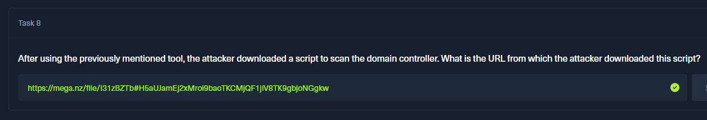
Task 9
What is the filename of the script? (Format - Full path of file, starting with drive letter)
I already know this from investigating the attacker's download history. If I were to miss this, I would search the $UsnJournal output for the two dates, or for the filename of the script.
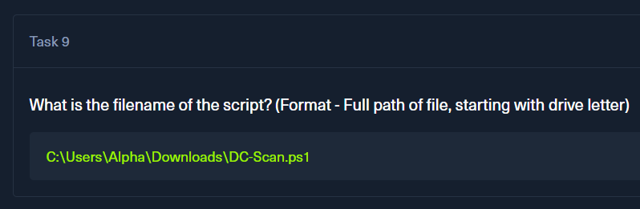
Task 10
`What is the timestamp indicating when the attacker deleted the script after it was downloaded?
I'll change the filters in Timeline Explorer to the following values:
Name: DC-Scan.ps1
Update Reasons: FileDelete
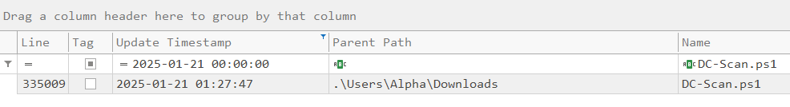
There is only a single record, and it occurred at 2025-01-21 01:27:47
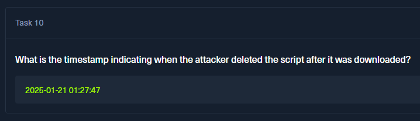
Task 11
What is the name of the shared file that the attacker accessed?
I began by trying to check out the jump list files. My idea behind this was that since the file is remote(I'm assuming it is on a remote share), it should update the jump lists, and therefore its full path should be listed in the AutomaticDestinations.
This failed, of course, and the reason for that is most likely because the attacker took actions against the file via a command prompt. In order for a file to be registered in the jump lists, it must be opened via the Windows GUI.
The next artifact to check will be the ShellBags, the UsrClass.dat hive to be precise. This hive stores information about the directories accessed by the user, so that Windows knows how to recreate the UI afterwards.
This hive is located under C\Users\Alpha\AppData\Local\Microsoft\Windows, and can be parsed with SBECmd.EXE
SBECmd.exe -d 'C:\Users\malware\Desktop\HTB\Whisper\C\Users\Alpha\AppData\Local\Microsoft\Windows' --csv sbout
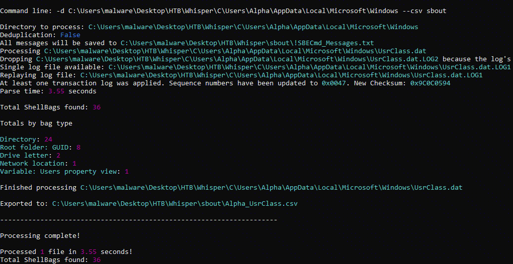
Now I'll open this file with Timeline Explorer, just like earlier.
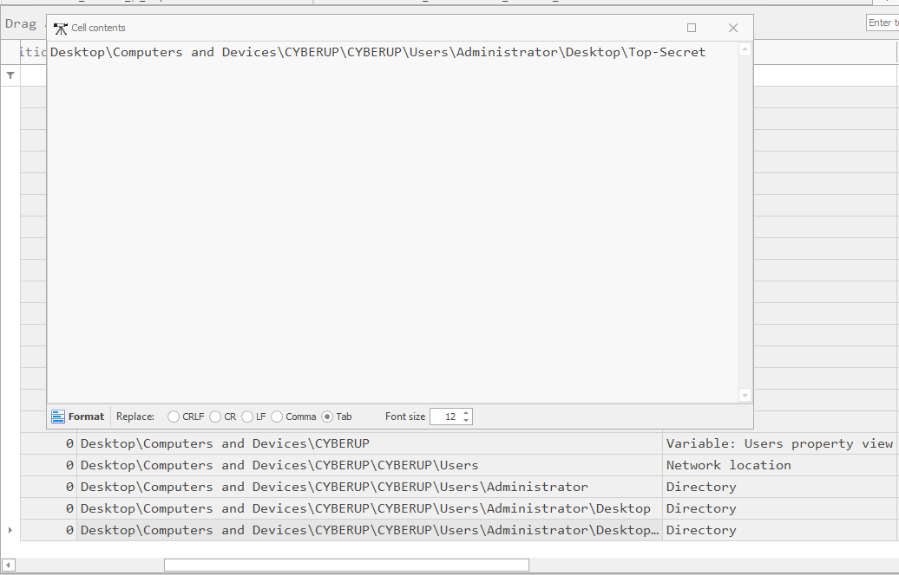
Alpha has accessed a Top-Secret directory in the CYBERUP share. However, ShellBags won't tell me which file was accessed there, as they only store information about accessed directories.
The next idea is to check the Recent directory for recently opened files. Windows automatically creates .lnk shortcuts whenever a user opens a file through an Explorer shell or by double-clicking. Parsing a shortcut file will often reveal its absolute path, as well as a bunch of other interesting data.
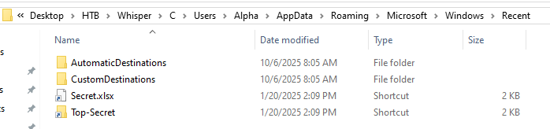
There is a .xlsx file shortcut in there. I will use LECmd to parse it.
LECmd.exe -f 'C:\Users\malware\Desktop\HTB\Whisper\C\Users\Alpha\AppData\Roaming\Microsoft\Windows\Recent\Secret.xlsx.lnk'
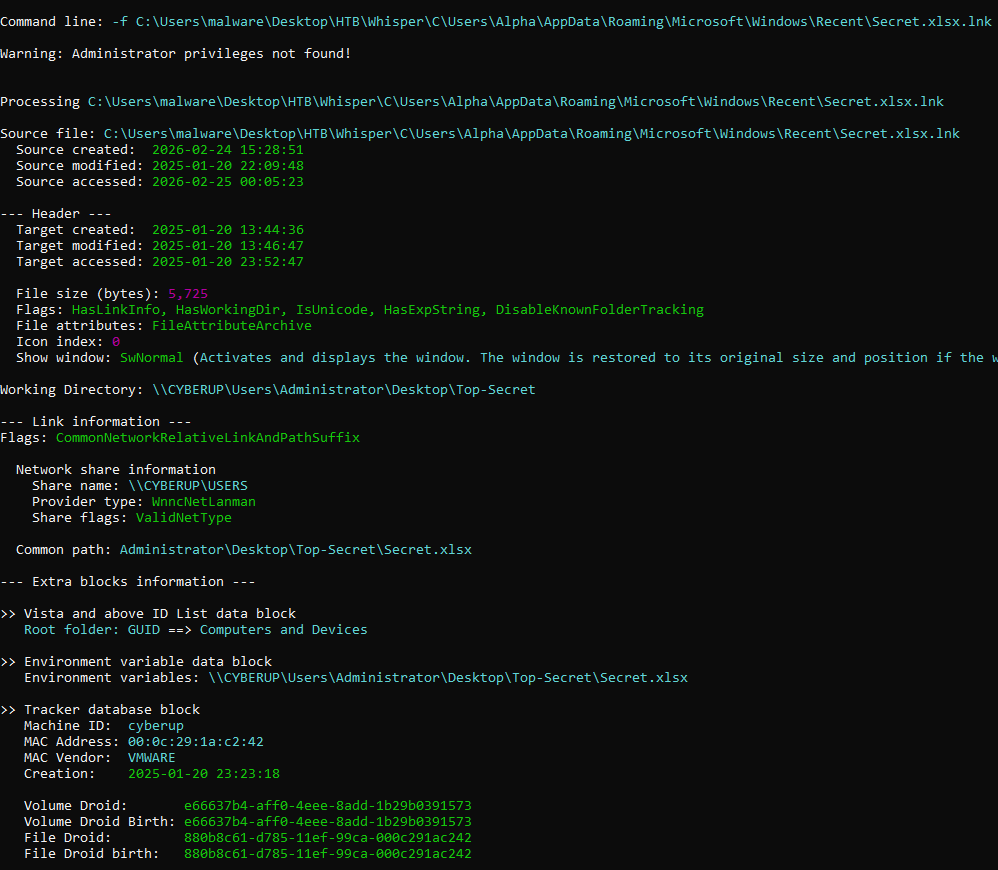
The full network path of this Excel sheet is \\CYBERUP\Users\Administrator\Desktop\Top-Secret\Secret.xlsx

Task 12
To persist, the attacker created a new user account. What is the SID of the newly created account?
For this question, I will go back to the SAM hive. I'll investigate the Users subkey.
RECmd.exe -f C:\Users\malware\Desktop\HTB\Whisper\C\Windows\System32\config\SAM --kn "SAM\Domains\Account\Users"
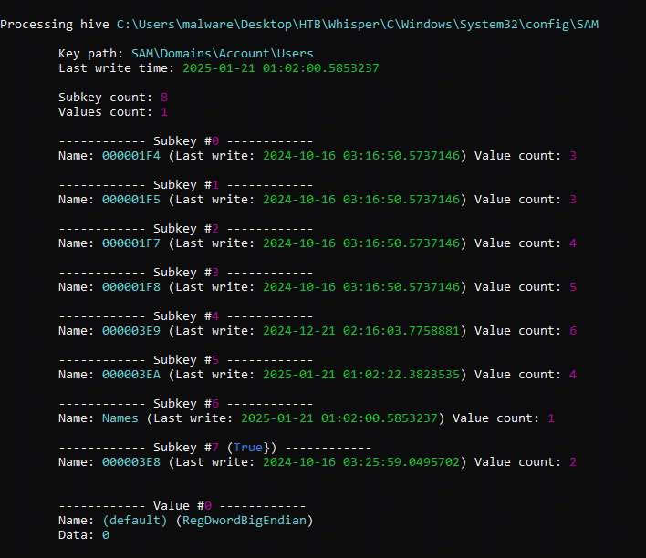
One of these users has their last write time matching the date of the attack. Their name converts to 1002 from hex.
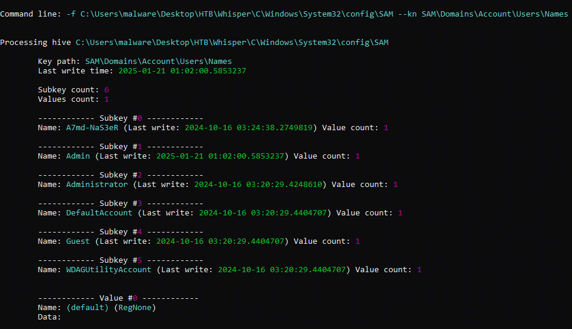
Looking further into the Names subkey reveals that the fake user's name is Admin. Combining their SID with the name value creates a full user SID of:
S-1-5-21-953115734-2025219997-3674921352-1002
The fact that the computer SID is used to create user SIDs points towards this being a local machine account, not a domain-joined one. In an AD setting, the user would have an SID consisting of the domain SID + their RID.
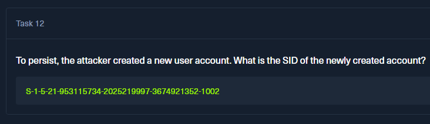
Task 13
How many times has the newly created user logged in?
The registry does not store logon data for local accounts. The same is not true for domain accounts, which store this data in the LogonCount attribute in the user object.
I will instead look into the Winevt logs for logon events related to the Admin user, particularly the Winevt ID of 4624(User logged in).
$Path = "C:\Users\malware\Desktop\HTB\Whisper\C\Windows\System32\winevt\Logs\Security.evtx"
$Logons = Get-WinEvent -Path $Path -FilterXPath "*[System[(EventID=4624)] and EventData[Data[@Name='TargetUserName']='Admin']]"
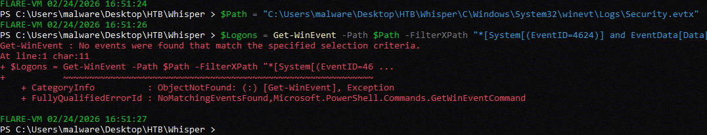
There are no logon events for the user Admin, meaning they have never logged in. This could be a sleeper agent made by Alpha to retain access if his current account were to be restricted.
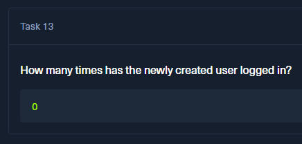
Task 14
What is the password of the newly created user?
This is a process frequently done while solving Active Directory boxes on HackTheBox. I'll use impacket's secretsdump.py to get the NTLM hashes of all accounts present in the SAM hive.
python .\secretsdump.py -system "C:\Users\malware\Desktop\HTB\Whisper\C\Windows\System32\config\SYSTEM" -sam "C:\Users\malware\Desktop\HTB\Whisper\C\Windows\System32\config\SAM" local
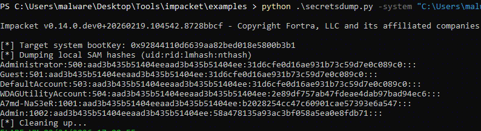
Now I'll save this hash into a file, and I'll try cracking it with hashcat on my host.
aad3b435b51404eeaad3b435b51404ee:58a478135a93ac3bf058a5ea0e8fdb71
hashcat.exe -m 1000 admin-hash.txt rockyou.txt
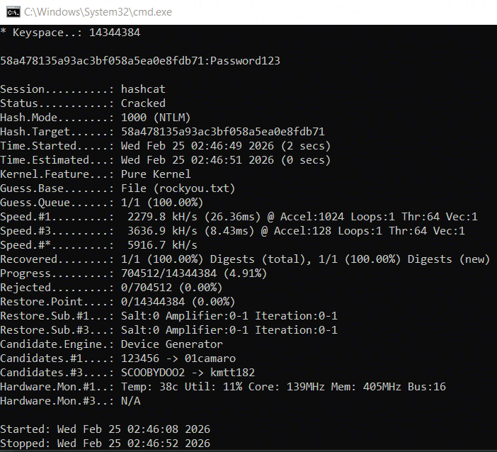
Admin's password is: Password123
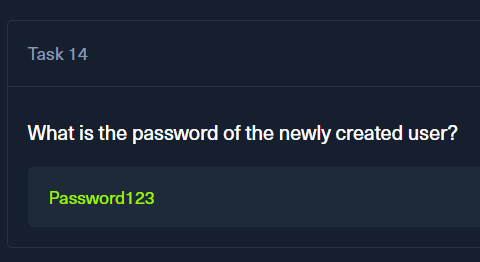
Solved!